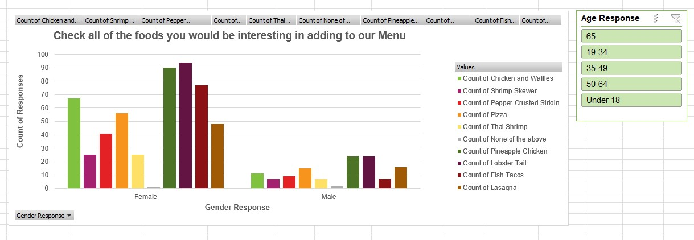

You have been asked to provide recommendations to help a local restaurant increase sales and customer satisfaction. You are also responsible to create some dashboards that make it easy to understand what our survey and sales data may help us to learn.
The restaurant administered a survey to current and potential customers to discover key information, including preferences, shopping patterns, and demographics (such as age and gender).
The first sheet of the project workbook contains a placeholder for the questions asked in the survey and the second sheet shows the question text (on row 1) on and the results from all respondents. The results in the spreadsheet are in a partially organized format because that is how the data came from the online survey program when exported into Excel. You will need to explore the data to determine how it can be useful. You are welcome to rearrange and reformat the sheet.
The company believes that the data may be useful, but they do not know how to manipulate or summarize the data. This is where they need your help. They have hired you to help them organize and summarize the data so that it is meaningful, easy to interpret, and useful for their marketing decisions.
Requirements
Survey Questions Sheet: Before creating pivot tables, take some time to get familiar with the data by copying the questions from the Survey Results sheet to the Survey Questions sheet. This will allow you to get a feel for the survey structure before trying to work with the data.
Survey dashboards (one sheet per survey question): Use the data from the Survey Results sheet. Create a pivot table and pivot chart for your choice of five survey questions (excluding the age and gender questions). Every table and chart needs to be connected to a slicer for gender or age (meaning there will be one slicer on each of the five new sheets). Label each sheet so the user can quickly determine which question it corresponds to.
Depending on the type of data provided in the responses (text or numeric) you will need to set up the pivot table differently.
Recommendation sheet: On the Recommendations sheet please provide what you feel are the three most important recommendations to the restaurant management team to help them increase sales and customer satisfaction. The pivot tables and charts you made are a great place to look for insights that could lead to recommendations. For each recommendation, please cite the analysis you did that supports it (see example row).
No insights to display.